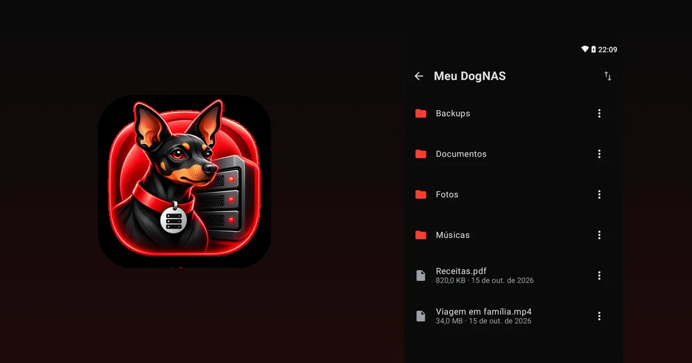

Como economizar nas assinaturas de armazenamento em nuvem

Você começou com o espaço grátis, encheu, e a nuvem sugeriu um plano "baratinho" por mês. Depois vieram o plano maior, o da família e outro serviço para o outro celular. Somadas, essas mensalidades pesam, e quase ninguém para para revisar. Este guia ajuda a pagar só pelo que faz sentido.
1. Descubra quanto você paga e pelo quê
Liste cada assinatura de armazenamento da casa: Google One, iCloud, OneDrive, Dropbox e outras. Anote o valor, o espaço contratado e quanto você realmente usa. É comum pagar por um plano de 200 GB usando 40 GB.
2. Aproveite o espaço gratuito
Os serviços oferecem um espaço grátis (hoje, por exemplo, 15 GB no Google e 5 GB no iCloud, valores que podem mudar). Se o que você guarda cabe nele, talvez nem precise de plano.
3. Limpe antes de pagar mais
O que ocupa espaço nem sempre vale guardar: fotos duplicadas, vídeos longos que você nunca vê, anexos antigos do e-mail, arquivos da lixeira. Limpar pode manter você num plano menor ou no gratuito.
4. Escolha o plano certo
- Compare o plano anual com o mensal; costuma ser mais barato por mês.
- Veja se há um plano familiar que divida o espaço entre pessoas da casa.
- Reduza o plano se o uso caiu.
5. Guarde em casa o que é pesado
Fotos e vídeos costumam ser 90% do espaço. Em vez de pagar para guardá-los na nuvem, você pode mantê-los em um servidor seu, dentro de casa. Um Android que está parado na gaveta serve: com o DogNAS, ele vira um servidor de arquivos no Wi-Fi da casa, sem mensalidade. O plano Grátis gerencia até 64 GB; o Pro, compra única e sem assinatura, usa o armazenamento inteiro do aparelho, inclusive cartão SD ou disco USB.


O que a nuvem faz melhor
Seja justo com as duas opções. A nuvem é boa para acessar de qualquer lugar, compartilhar um link e ter a cópia fora da sua casa. O servidor em casa é bom para guardar muito, de forma privada e sem mensalidade, mas só é acessado pelo Wi-Fi da casa e depende do aparelho ligado. Muita gente fica com os dois: o essencial na nuvem e o volume no servidor.
Cuidados antes de cancelar
- Confira que tudo chegou ao novo lugar antes de apagar da nuvem.
- Mantenha uma cópia independente do que é insubstituível. Um servidor em casa guarda os arquivos no armazenamento escolhido e não faz backup sozinho; um disco pode falhar.
- Cancele só no fim, depois de testar por algumas semanas.
Próximo passo
Faça a lista das suas assinaturas, limpe o que sobra e leve fotos e vídeos para um lugar seu. Para começar, veja como transformar um Android antigo em servidor de arquivos.